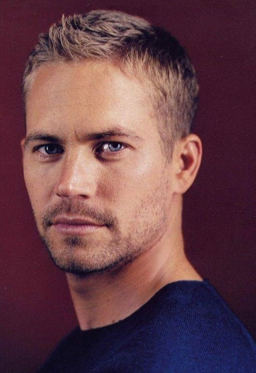

Paul William Walker
1973 - 2013
Was an American Actor
Paul William Walker (September 12, 1973 – November 30, 2013) was an American actor. He is best known for his
role as Brian O'Conner in the Fast & Furious franchise.

The following list is a time line of paul-walker :-
1973 - born in Glendale, California.
1980 - began his career as a child actor.
1990 - appeared in the television soap opera The Young and the Restless.
1999 - he received praise for his performances in the teen film She's All That and the
coming-of-age film Varsity Blues.
2001 - role arrived when he starred opposite Vin Diesel in the action film The Fast and the
Furious.
2003 -reprised his role as Brian O'Conner in the 2003 sequel 2 Fast 2 Furious.
2005 - box-office disappointments in Into the Blue and Running Scared.
2006 - earned praise in other genres, like in the survival drama Eight Below, and for his
portrayal of Hank Hansen the war film Flags of Our Fathers.
2009 - reprised his role as Brian O'Conner after seven years, in Fast & Furious .
2010 - largely appeared in low budget action films, but starred in the commercially successful heist film Takers.
2012 - appeared as the face of fragrance brand Cool Water.
2013 - died at the age of 40 as a passenger in a single-car crash alongside friend and
driver Roger Rodas thought to be caused by driving into a gas pipe.
2014 - he had not completed filming Furious 7,which was completed after rewrites and
stand-ins, including his brothers Cody and Caleb, filled in for Walker.